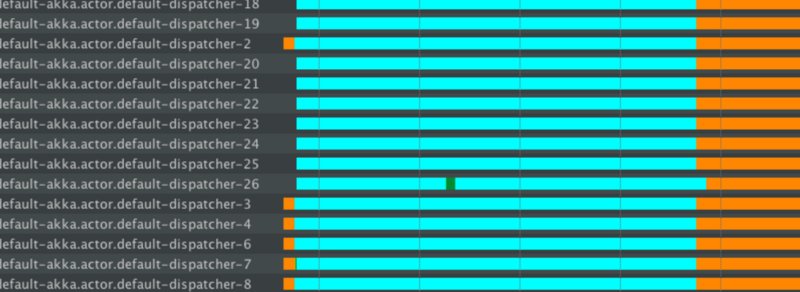

Handling blocking operations in Akka HTTP
Sometimes it is difficult to avoid performing the blocking operations and there are good chances that the blocking is done inside a Future execution, which may lead to problems. It is important to handle the blocking operations correctly.
Problem
Using context.dispatchercontext.dispatcher() as the dispatcher on which the blocking Future executes can be a problem - the same dispatcher is used by the routing infrastructure to actually handle the incoming requests.
If all of the available threads are blocked, the routing infrastructure will end up starving. Therefore, routing infrastructure should not be blocked. Instead, a dedicated dispatcher for blocking operations should be used.
Blocking APIs should also be avoided if possible. Try to find or build Reactive APIs, such that blocking is minimised, or moved over to dedicated dispatchers.
Often when integrating with existing libraries or systems it is not possible to avoid blocking APIs. The following solution explains how to handle blocking operations properly.
Note that the same hints apply to managing blocking operations anywhere in Akka, including in Actors etc.
In the thread state diagrams below the colours have the following meaning:
- Turquoise - Sleeping state
- Orange - Waiting state
- Green - Runnable state
The thread information was recorded using the YourKit profiler, however any good JVM profiler has this feature (including the free and bundled with the Oracle JDK VisualVM, as well as Oracle Flight Recorder).
Problem example: blocking the default dispatcher
- Scala
-
// BAD (due to blocking in Future, on default dispatcher) implicit val defaultDispatcher = system.dispatcher val routes: Route = post { complete { Future { // uses defaultDispatcher Thread.sleep(5000) // will block on default dispatcher, System.currentTimeMillis().toString // Starving the routing infrastructure } } } - Java
-
import static akka.http.javadsl.server.Directives.completeWithFuture; import static akka.http.javadsl.server.Directives.post; // BAD (due to blocking in Future, on default dispatcher) final Route routes = post( () -> completeWithFuture(CompletableFuture.supplyAsync(() -> { // uses defaultDispatcher try { Thread.sleep(5000L); // will block on default dispatcher, } catch (InterruptedException e) { } return HttpResponse.create() // Starving the routing infrastructure .withEntity(Long.toString(System.currentTimeMillis())); })) );
Here the app is exposed to a load of continuous GET requests and large numbers of akka.actor.default-dispatcher threads are handling requests. The orange portion of the thread shows that it is idle. Idle threads are fine - they’re ready to accept new work. However, large amounts of Turquoise (sleeping) threads are very bad!

After some time, the app is exposed to the load of POST requests, which will block these threads.
Since we’re using the Java CompletableFuture in this example, the blocking will happen on its default pool which is the global ForkJoinPool.commonPool(). With Scala Futures the in-scope provided dispatcher would be used. Both these dispatchers are ForkJoin pools by default, and are not best suited for blocking operations.
For example, the above screenshot shows an Akka FJP dispatchers threads, named “default-akka.default-dispatcher2,3,4” going into the blocking state, after having been idle. It can be observed that the number of new threads increases, “default-akka.actor.default-dispatcher 18,19,20,...” however they go to sleep state immediately, thus wasting the resources. The same happens to the global ForkJoinPoolForkJoinPool when using Java Futures.
The number of such new threads depends on the default dispatcher configuration, but it will likely not exceed 50. Since many POST requests are being processed, the entire thread pool is starved. The blocking operations dominate such that the routing infra has no thread available to handle the other requests.
In essence, the Thread.sleepThread.sleep() operation has dominated all threads and caused anything executing on the default dispatcher to starve for resources (including any Actors that you have not configured an explicit dispatcher for).
Solution: Dedicated dispatcher for blocking operations
In application.conf, the dispatcher dedicated to blocking behaviour should be configured as follows:
my-blocking-dispatcher {
type = Dispatcher
executor = "thread-pool-executor"
thread-pool-executor {
fixed-pool-size = 16
}
throughput = 1
}
There are many dispatcher options available which can be found in Dispatchers.
Here thread-pool-executor is used, which has a hardcoded limit of threads. It keeps a set number of threads available that allow for safe isolation of the blocking operations. The size settings should depend on the app’s functionality and the number of cores the server has.
Whenever blocking has to be done, use the above configured dispatcher instead of the default one:
- Scala
-
// GOOD (the blocking is now isolated onto a dedicated dispatcher): implicit val blockingDispatcher = system.dispatchers.lookup("my-blocking-dispatcher") val routes: Route = post { complete { Future { // uses the good "blocking dispatcher" that we configured, // instead of the default dispatcher to isolate the blocking. Thread.sleep(5000) System.currentTimeMillis().toString } } } - Java
-
import static akka.http.javadsl.server.Directives.completeWithFuture; import static akka.http.javadsl.server.Directives.post; // GOOD (the blocking is now isolated onto a dedicated dispatcher): final Route routes = post(() -> { final MessageDispatcher dispatcher = system.dispatchers().lookup("my-blocking-dispatcher"); return completeWithFuture(CompletableFuture.supplyAsync(() -> { try { Thread.sleep(5000L); } catch (InterruptedException e) { } return HttpResponse.create() .withEntity(Long.toString(System.currentTimeMillis())); }, dispatcher // uses the good "blocking dispatcher" that we // configured, instead of the default dispatcher to isolate the blocking. )); });
This forces the app to use the same load, initially normal requests and then the blocking requests. The thread pool behaviour is shown in the figure.

Initially, the normal requests are easily handled by the default dispatcher - the green lines, which represent the actual execution.
When blocking operations are issued, the my-blocking-dispatcher starts up to the number of configured threads. It handles sleeping. After a certain period of nothing happening to the threads, it shuts them down.
If another bunch of operations have to be done, the pool will start new threads that will take care of putting them into sleep state, but the threads are not wasted.
In this case, the throughput of the normal GET requests was not impacted - they were still served on the default dispatcher.
This is the recommended way of dealing with any kind of blocking in reactive applications. It is referred to as “bulkheading” or “isolating” the bad behaving parts of an app. In this case, bad behaviour of blocking operations.
There is good documentation available in Akka docs section, Blocking needs careful management.